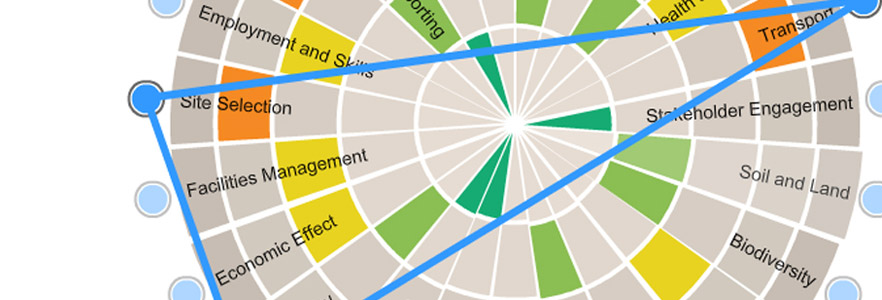

Ruby on Wha..?
A First Look at Rails
March 11, 2016
Introduction
Living in a city filled with techies and not being one myself, I would often hear the terms "Ruby," "Rails," and "Ruby on Rails" thrown around (along with a host of other equally confusing sounding terms). By researching and writing this blog post, I hope to never be quite that confused again!
What is Rails?
Here are the top 5 most commonly recurring themes and definitions that I came across doing some light research on Rails:
- Rails is a framework written in the Ruby language
- It is intended for the optimized development of web services, web development, and web resources
- It is an open source software, and there are over 4,000 programmers that have contributed towards its development
- It was first developed and shared for collaboration in 2004-5, and has since had several major releases
- It emphasizes the use of don't repeat yourself (DRY) and convention over configuration (CoC)
So what does all of that mean? Well, the first two points describe what Rails is and what it is used for. A framework is something that provides an outline that guides development, but does not rigidly dictate what the development should be. In our case, Rails is the outline guiding web development and/or web services.
The third point outlines how the Rails source software is managed and distributed. It is open source which means it is freely licensed to use or copy. This is also how a community of developers have been able to collaborate towards its continuous improvement that (per point 4 above) has resulted in 13 versions since its inception in 2005.
The fifth and final point is not as intuitive as the rest, and required a little more digging.
Don't Repeat Yourself
If you have ever re factored your code, chances are came across the principals of "don't repeat yourself" or "DRY" code. The DRY principle deals with making sure that information is not repeated within code or within any system. The goal for this is to ensure that every unique piece of knowledge has a single, unambiguous, and authoritative representation within the system, and so that time and resource waste is minimized.
Convention over Configuration
CoC was one of the entirely new concepts I came across when looking into Rails. Like DRY, it has to do with a paradigm of how programmers approach writing code. Whereas DRY has to do with finding more eloquent and concise ways to write code, CoC has to do with the scope of the programmer. Rails defines and prioritizes a conventional way of doing something, and the programmer only needs to interfere if an unconventional method is desired instead. The intent for a CoC programming style is to minimize the amount of decision making that the programmer has to do, which in turn simplifies the resulting product without necessarily reducing flexibility.
Conclusion
This short post provides some basics about Rails, history, and intended use. Direct experience is always more valuable than secondary research, and so I look forward to getting my hands WET (no pun intended) with Rails during phase-1 and 2!